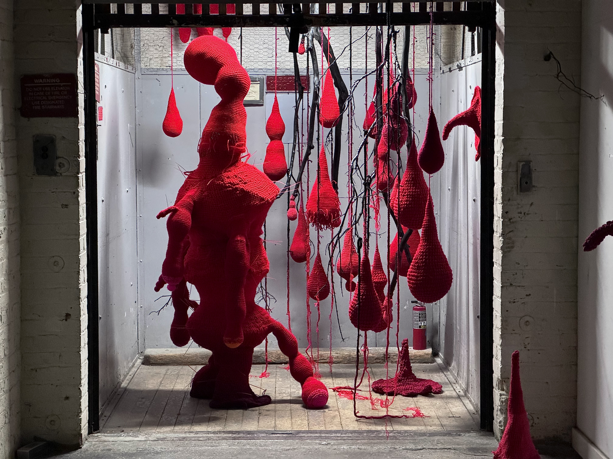
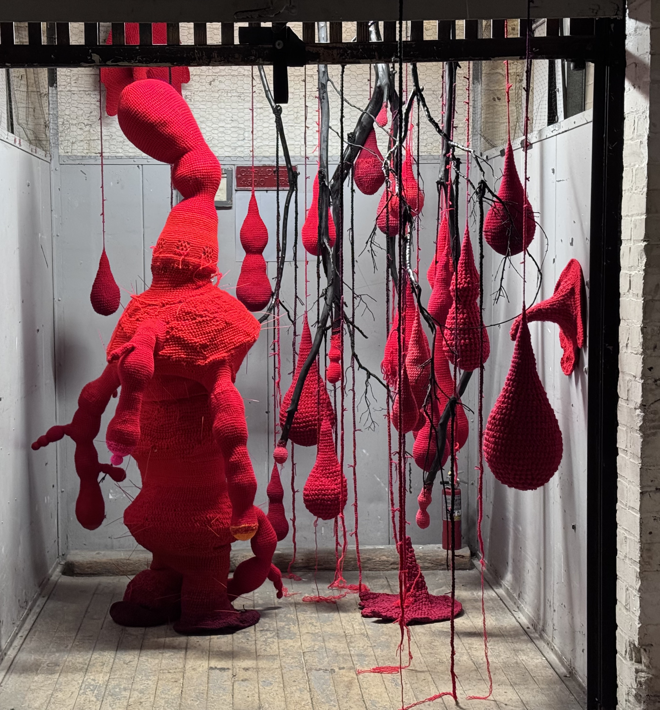
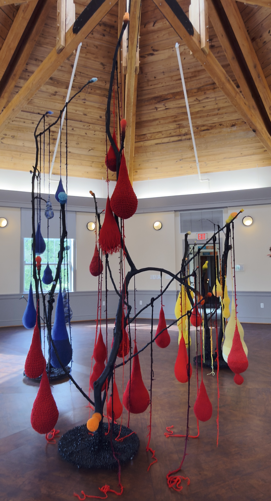
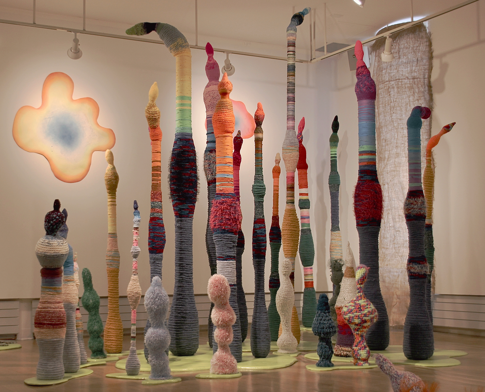
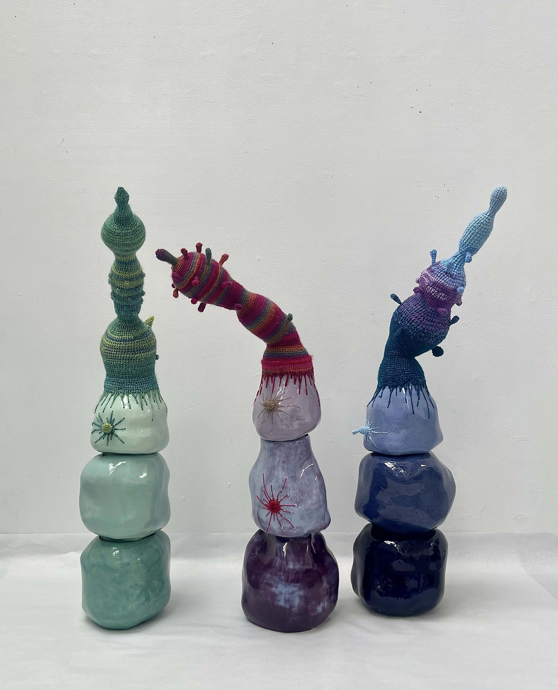
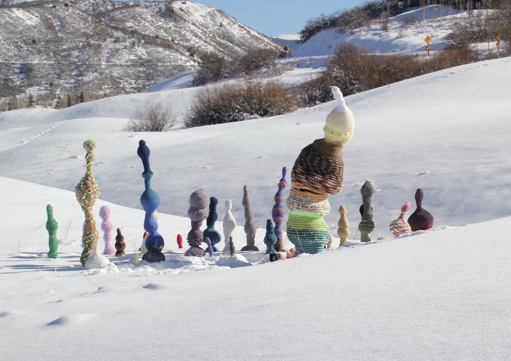
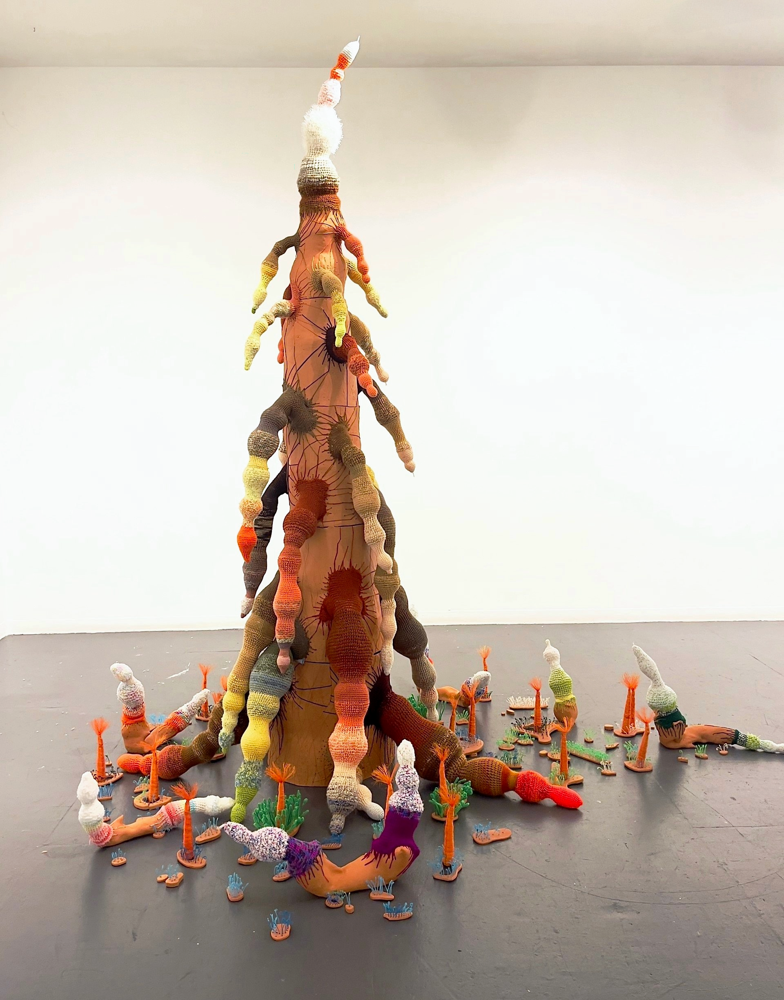
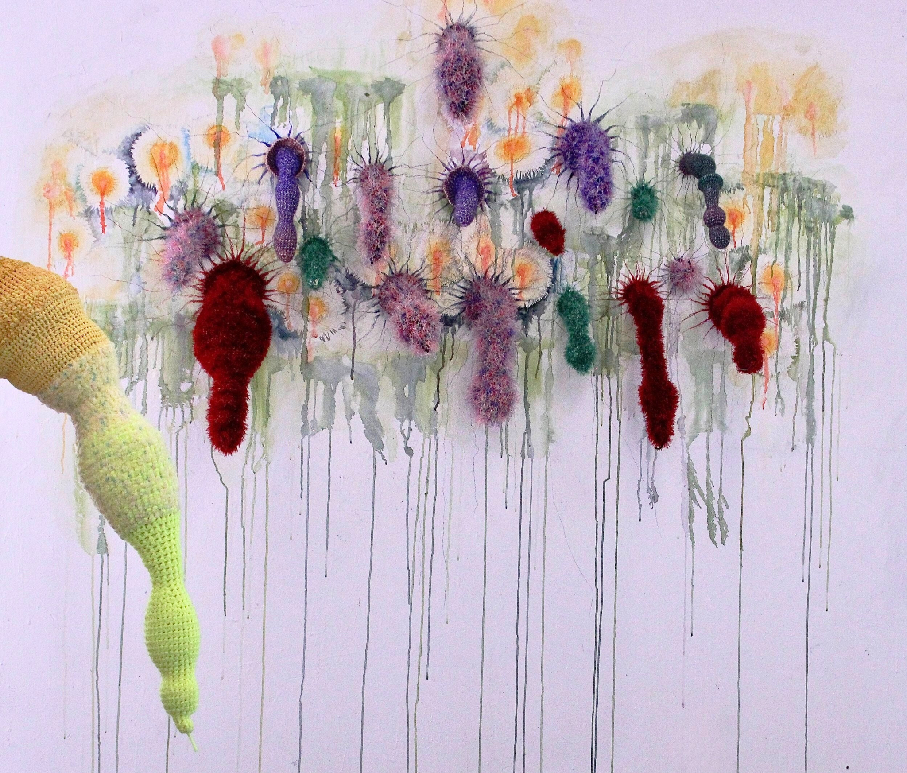
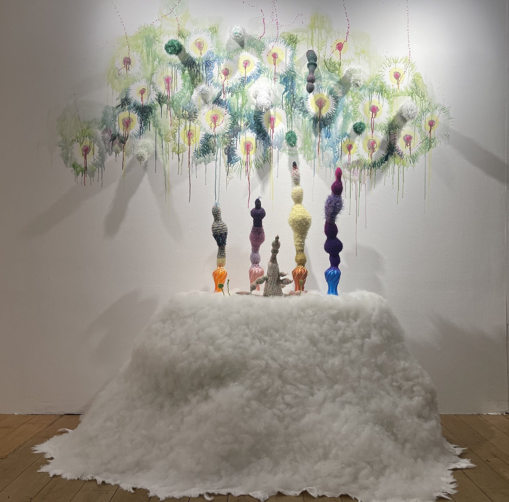

Ginhwa (Evolve)
The tensions between adaptation and resistance within my identity as shaped by the spaces I inhabit.



The tensions between adaptation and resistance within my identity as shaped by the spaces I inhabit.

The “Thingumabob” is a collective, reflective of their own lived cultural experience of confusion of identity and adaptation in a melting pot society /Environment of itself when installed in a unique environment.

Inner structure of Thingumabob muscles & cells are creating an environment for Wearable Thingumabob & Pop-Star Thingumabobs


Installation at Aspen, Colorado

Display at 636 Gallery/Gumposog Art Center in Seoul, Korea
“Nurturing and caring for the next generation”

The “thingumabob” is growing, morphing from a few structures into multiple families, and now, into a collective society.

A harmonious balance between industrial materials, family history, and cultural hybridity.

Katzen Art Museum, Washington D.C.
The hope of better and balanced lives.

Burlington City Arts, Burlington, Vermont



— Seven Days Vermont
Read article here